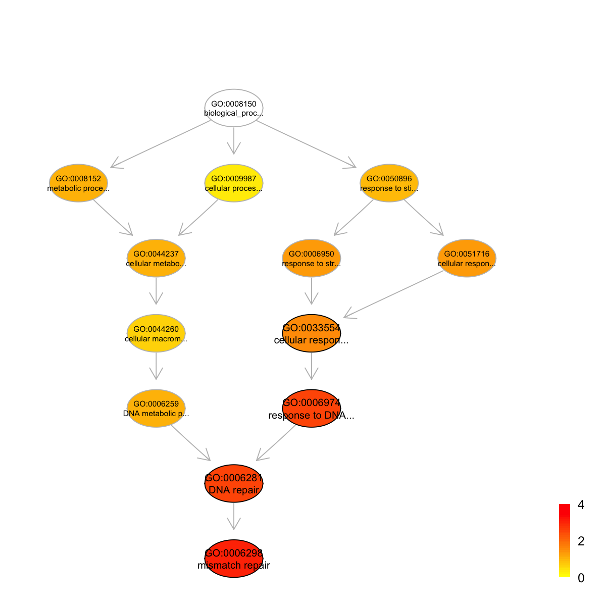
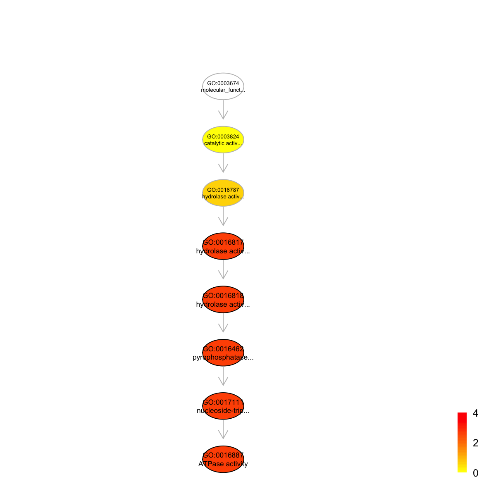
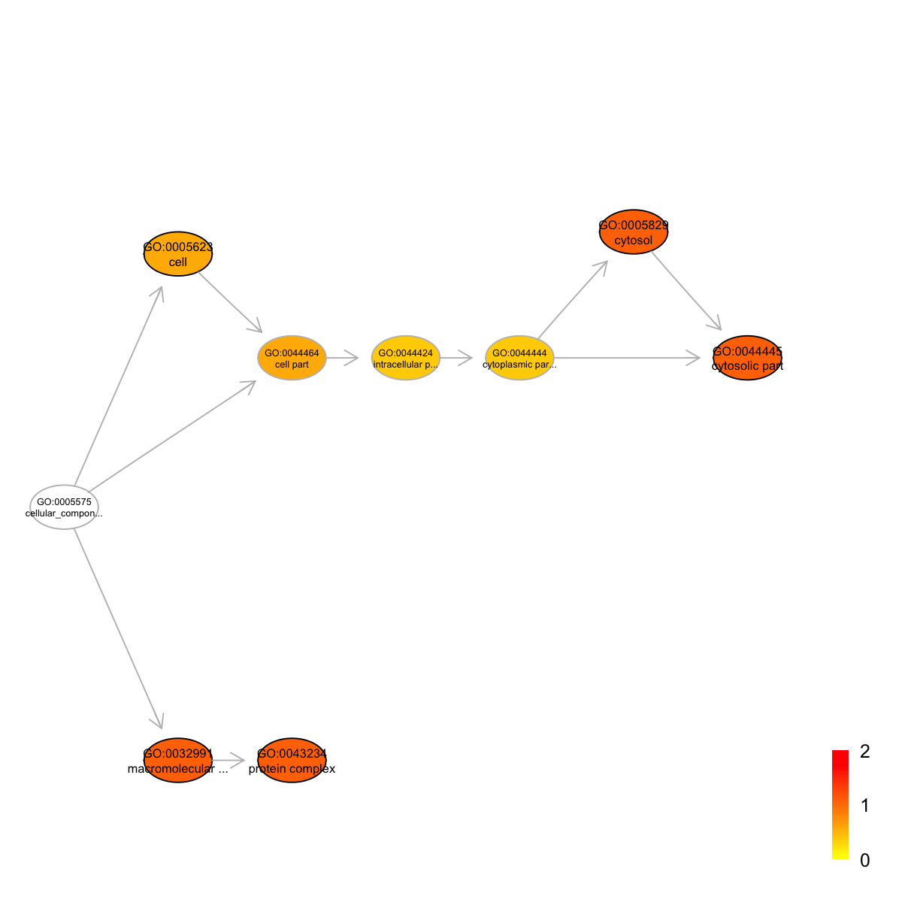
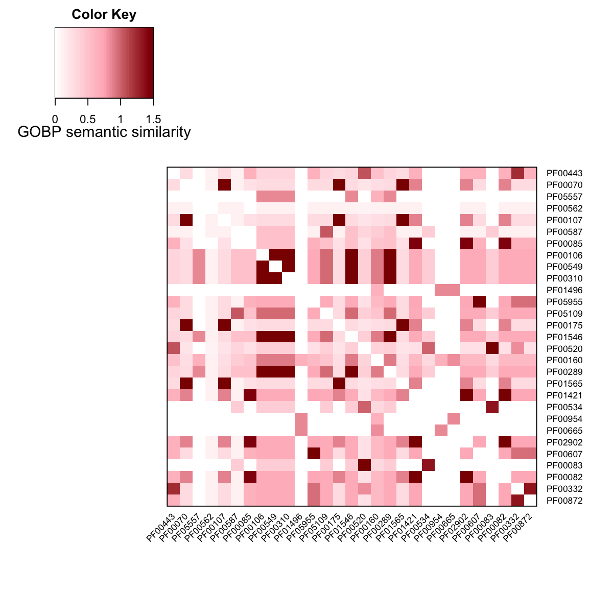
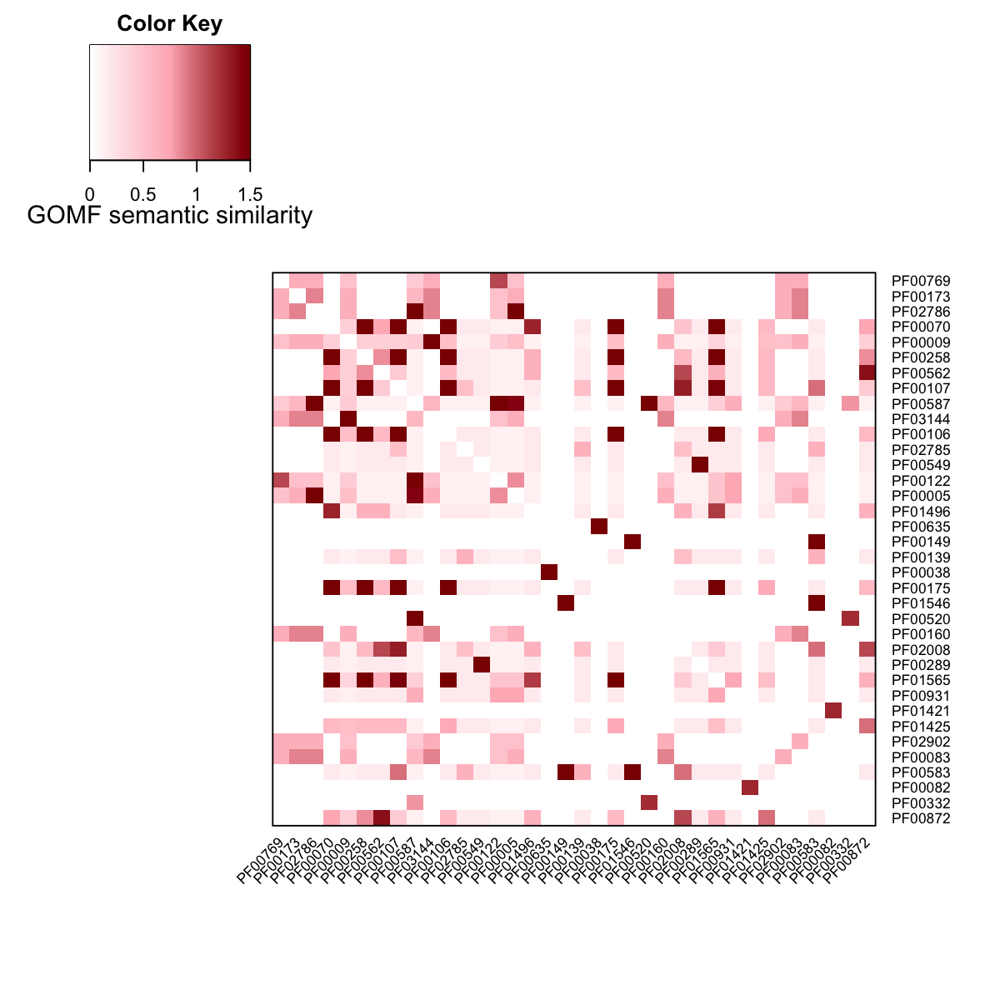
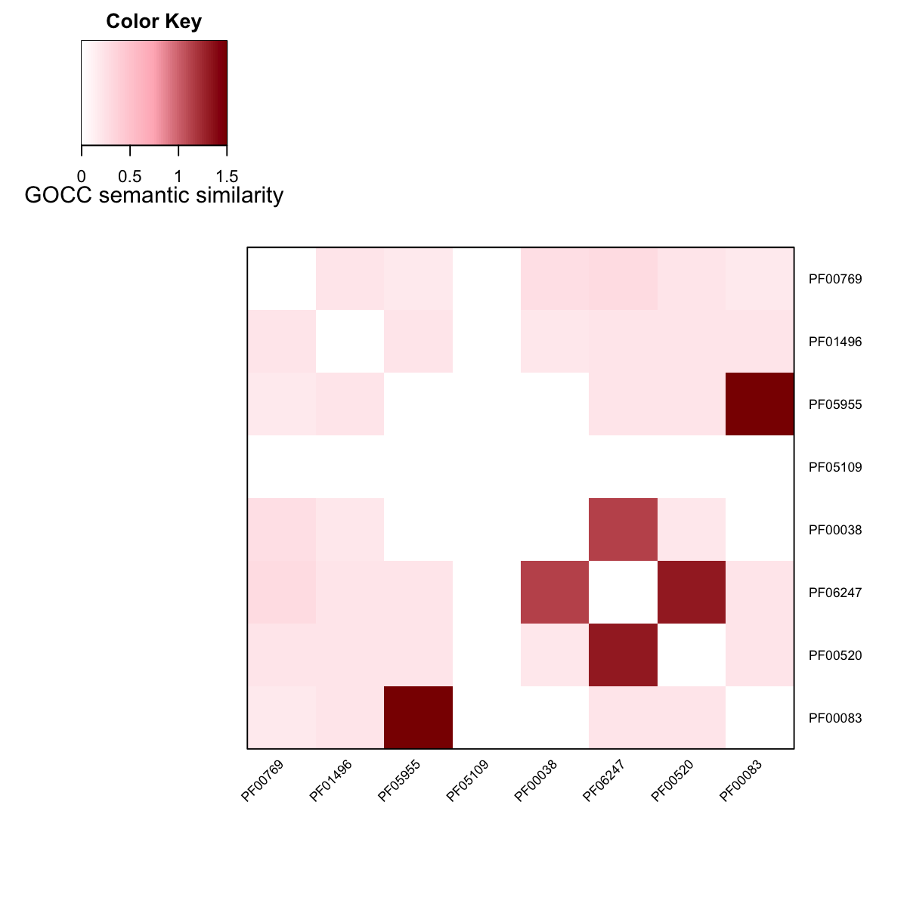
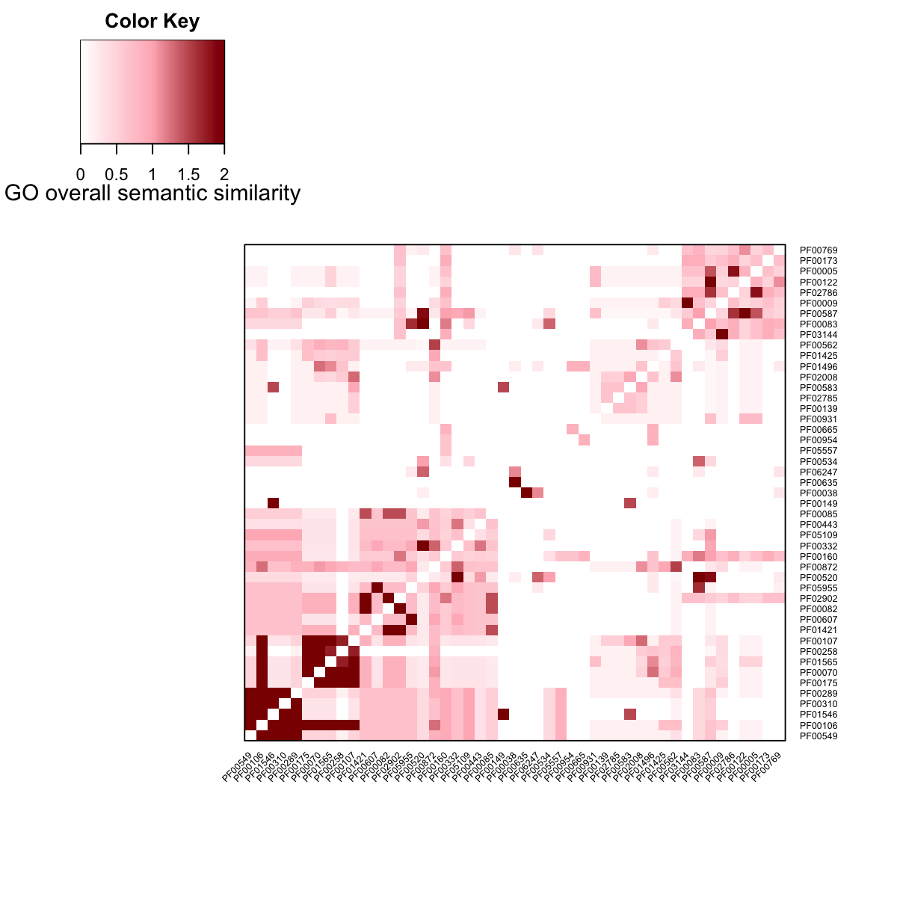

Pfam Promiscuity
1 PF00117 304.56
2 PF00364 222.74
3 PF00443 201.48
4 PF00769 195.98
5 PF00173 182.43
'Pfam' (from package 'dcGOR' version 1.0.5) has been loaded into the working environment
Pfam
An object of S4 class 'InfoDataFrame'
rowNames: PF00001 PF00002 PF00003 ... PF15659 PF15660 (14831 total)
colNames: id level description
Start at 2015-06-04 16:04:31
First, load the ontology 'GOBP', the domain 'Pfam', and their associations (2015-06-04 16:04:31) ...
'onto.GOBP' (from package 'dcGOR' version 1.0.5) has been loaded into the working environment
'Pfam' (from package 'dcGOR' version 1.0.5) has been loaded into the working environment
'Pfam2GOBP' (from package 'dcGOR' version 1.0.5) has been loaded into the working environment
Second, perform enrichment analysis using HypergeoTest (2015-06-04 16:04:38) ...
There are 722 terms being used, each restricted within [10,1000] annotations
Last, adjust the p-values using the BH method (2015-06-04 16:04:38) ...
End at 2015-06-04 16:04:38
Runtime in total is: 7 secs
eoutput
An object of S4 class 'Eoutput', containing following slots:
@domain: 'Pfam'
@ontology: 'GOBP'
@term_info: a data.frame of 74 terms X 5 information
@anno: a list of 74 terms, each storing annotated domains
@data: a vector containing a group of 29 input domains (annotatable)
@background: a vector containing a group of 3241 background domains (annotatable)
@overlap: a list of 74 terms, each containing domains overlapped with input domains
@zscore: a vector of 74 terms, containing z-scores
@pvalue: a vector of 74 terms, containing p-values
@adjp: a vector of 74 terms, containing adjusted p-values
In summary, a total of 74 terms ('GOBP') are analysed for a group of 29 input domains ('Pfam')
A file ('Basu_GOBP_enrichments.txt') has been written into your local directory ('/Users/hfang/Sites/SUPERFAMILY/dcGOR')
### view the top 5 significant terms
view(eoutput, top_num=5, sortBy="pvalue", details=TRUE)
term_id nAnno nGroup nOverlap zscore pvalue adjp
GO:0006298 GO:0006298 62 29 5 6.05 1.3e-05 0.00096
GO:0006281 GO:0006281 88 29 5 4.83 9.7e-05 0.00310
GO:0006974 GO:0006974 92 29 5 4.69 1.2e-04 0.00310
GO:0033554 GO:0033554 145 29 5 3.34 1.5e-03 0.02700
GO:0016051 GO:0016051 119 29 4 2.91 3.6e-03 0.05000
term_name term_namespace term_distance
GO:0006298 mismatch repair biological_process 8
GO:0006281 DNA repair biological_process 6
GO:0006974 response to DNA damage stimulus biological_process 5
GO:0033554 cellular response to stress biological_process 3
GO:0016051 carbohydrate biosynthetic process biological_process 4
members
GO:0006298 PF00289,PF00310,PF00549,PF01546,PF00106
GO:0006281 PF00289,PF00310,PF00549,PF01546,PF00106
GO:0006974 PF00289,PF00310,PF00549,PF01546,PF00106
GO:0033554 PF00289,PF00310,PF00549,PF01546,PF00106
GO:0016051 PF02902,PF01421,PF00082,PF00085
Ontology 'GOBP' containing 13 nodes/terms (including 4 in query; also highlighted in frame) has been shown in your screen, with colorbar indicating -1*log10(adjusted p-values)
#### look at Pfam domains annotated by the most signficant term
tmp <- as.character(view(eoutput, top_num=1, sortBy="pvalue", details=T)$members)

tmp <- unlist(strsplit(tmp,","))
Data(Pfam)[match(tmp,rowNames(Pfam)),]
id level description
PF00289 PF00289 Pfam Carbamoyl-phosphate synthase L chain, N-terminal domain
PF00310 PF00310 Pfam Glutamine amidotransferases class-II
PF00549 PF00549 Pfam CoA-ligase
PF01546 PF01546 Pfam Peptidase family M20/M25/M40
PF00106 PF00106 Pfam short chain dehydrogenase
Start at 2015-06-04 16:04:42
First, load the ontology 'GOMF', the domain 'Pfam', and their associations (2015-06-04 16:04:42) ...
'onto.GOMF' (from package 'dcGOR' version 1.0.5) has been loaded into the working environment
'Pfam' (from package 'dcGOR' version 1.0.5) has been loaded into the working environment
'Pfam2GOMF' (from package 'dcGOR' version 1.0.5) has been loaded into the working environment
Second, perform enrichment analysis using HypergeoTest (2015-06-04 16:04:44) ...
There are 334 terms being used, each restricted within [10,1000] annotations
Last, adjust the p-values using the BH method (2015-06-04 16:04:44) ...
End at 2015-06-04 16:04:45
Runtime in total is: 3 secs
eoutput
An object of S4 class 'Eoutput', containing following slots:
@domain: 'Pfam'
@ontology: 'GOMF'
@term_info: a data.frame of 24 terms X 5 information
@anno: a list of 24 terms, each storing annotated domains
@data: a vector containing a group of 36 input domains (annotatable)
@background: a vector containing a group of 3359 background domains (annotatable)
@overlap: a list of 24 terms, each containing domains overlapped with input domains
@zscore: a vector of 24 terms, containing z-scores
@pvalue: a vector of 24 terms, containing p-values
@adjp: a vector of 24 terms, containing adjusted p-values
In summary, a total of 24 terms ('GOMF') are analysed for a group of 36 input domains ('Pfam')
A file ('Basu_GOMF_enrichments.txt') has been written into your local directory ('/Users/hfang/Sites/SUPERFAMILY/dcGOR')
### view the top 5 significant terms
view(eoutput, top_num=5, sortBy="pvalue", details=TRUE)
term_id nAnno nGroup nOverlap zscore pvalue adjp
GO:0016887 GO:0016887 106 36 6 4.66 0.00010 0.0022
GO:0017111 GO:0017111 121 36 6 4.23 0.00023 0.0022
GO:0016462 GO:0016462 132 36 6 3.95 0.00040 0.0022
GO:0016818 GO:0016818 133 36 6 3.93 0.00042 0.0022
GO:0016817 GO:0016817 135 36 6 3.88 0.00046 0.0022
term_name
GO:0016887 ATPase activity
GO:0017111 nucleoside-triphosphatase activity
GO:0016462 pyrophosphatase activity
GO:0016818 hydrolase activity, acting on acid anhydrides, in phosphorus-containing anhydrides
GO:0016817 hydrolase activity, acting on acid anhydrides
term_namespace term_distance
GO:0016887 molecular_function 7
GO:0017111 molecular_function 6
GO:0016462 molecular_function 5
GO:0016818 molecular_function 4
GO:0016817 molecular_function 3
members
GO:0016887 PF00175,PF00258,PF01565,PF00070,PF00106,PF00107
GO:0017111 PF00175,PF00258,PF01565,PF00070,PF00106,PF00107
GO:0016462 PF00175,PF00258,PF01565,PF00070,PF00106,PF00107
GO:0016818 PF00175,PF00258,PF01565,PF00070,PF00106,PF00107
GO:0016817 PF00175,PF00258,PF01565,PF00070,PF00106,PF00107
Ontology 'GOMF' containing 8 nodes/terms (including 5 in query; also highlighted in frame) has been shown in your screen, with colorbar indicating -1*log10(adjusted p-values)
#### look at Pfam domains annotated by the most signficant term
tmp <- as.character(view(eoutput, top_num=1, sortBy="pvalue", details=T)$members)

tmp <- unlist(strsplit(tmp,","))
Data(Pfam)[match(tmp,rowNames(Pfam)),]
id level description
PF00175 PF00175 Pfam Oxidoreductase NAD-binding domain
PF00258 PF00258 Pfam Flavodoxin
PF01565 PF01565 Pfam FAD binding domain
PF00070 PF00070 Pfam Pyridine nucleotide-disulphide oxidoreductase
PF00106 PF00106 Pfam short chain dehydrogenase
PF00107 PF00107 Pfam Zinc-binding dehydrogenase
Start at 2015-06-04 16:04:46
First, load the ontology 'GOCC', the domain 'Pfam', and their associations (2015-06-04 16:04:46) ...
'onto.GOCC' (from package 'dcGOR' version 1.0.5) has been loaded into the working environment
'Pfam' (from package 'dcGOR' version 1.0.5) has been loaded into the working environment
'Pfam2GOCC' (from package 'dcGOR' version 1.0.5) has been loaded into the working environment
Second, perform enrichment analysis using HypergeoTest (2015-06-04 16:04:48) ...
There are 149 terms being used, each restricted within [10,1000] annotations
Last, adjust the p-values using the BH method (2015-06-04 16:04:48) ...
End at 2015-06-04 16:04:48
Runtime in total is: 2 secs
eoutput
An object of S4 class 'Eoutput', containing following slots:
@domain: 'Pfam'
@ontology: 'GOCC'
@term_info: a data.frame of 10 terms X 5 information
@anno: a list of 10 terms, each storing annotated domains
@data: a vector containing a group of 8 input domains (annotatable)
@background: a vector containing a group of 2036 background domains (annotatable)
@overlap: a list of 10 terms, each containing domains overlapped with input domains
@zscore: a vector of 10 terms, containing z-scores
@pvalue: a vector of 10 terms, containing p-values
@adjp: a vector of 10 terms, containing adjusted p-values
In summary, a total of 10 terms ('GOCC') are analysed for a group of 8 input domains ('Pfam')
A file ('Basu_GOCC_enrichments.txt') has been written into your local directory ('/Users/hfang/Sites/SUPERFAMILY/dcGOR')
### view the top 5 significant terms
view(eoutput, top_num=5, sortBy="pvalue", details=FALSE)
term_id nAnno nGroup nOverlap zscore pvalue adjp
GO:0043234 GO:0043234 1246 8 7 1.530 0.020 0.083
GO:0044445 GO:0044445 326 8 3 1.660 0.026 0.083
GO:0005829 GO:0005829 327 8 3 1.650 0.027 0.083
GO:0032991 GO:0032991 1332 8 7 1.320 0.033 0.083
GO:0005623 GO:0005623 1613 8 7 0.578 0.150 0.260
term_name
GO:0043234 protein complex
GO:0044445 cytosolic part
GO:0005829 cytosol
GO:0032991 macromolecular complex
GO:0005623 cell
Ontology 'GOCC' containing 9 nodes/terms (including 5 in query; also highlighted in frame) has been shown in your screen, with colorbar indicating -1*log10(adjusted p-values)
#### look at Pfam domains annotated by the most signficant term
tmp <- as.character(view(eoutput, top_num=1, sortBy="pvalue", details=T)$members)

tmp <- unlist(strsplit(tmp,","))
Data(Pfam)[match(tmp,rowNames(Pfam)),]
id level description
PF06247 PF06247 Pfam Plasmodium ookinete surface protein Pvs28
PF00520 PF00520 Pfam Ion transport protein
PF01496 PF01496 Pfam V-type ATPase 116kDa subunit family
PF00038 PF00038 Pfam Intermediate filament protein
PF05955 PF05955 Pfam Equine herpesvirus glycoprotein gp2
PF00083 PF00083 Pfam Sugar (and other) transporter
PF00769 PF00769 Pfam Ezrin/radixin/moesin family
'onto.GOBP' (from package 'dcGOR' version 1.0.5) has been loaded into the working environment
g
An object of S4 class 'Onto'
@adjMatrix: a direct matrix of 25154 terms (parents/from) X 25154 terms (children/to)
@nodeInfo (InfoDataFrame)
nodeNames: GO:0008150 GO:0000003 GO:0001906 ... GO:0021810 GO:0021811
(25154 total)
nodeAttr: term_id term_name term_namespace term_distance
'Pfam2GOBP' (from package 'dcGOR' version 1.0.5) has been loaded into the working environment
Anno
An object of S4 class 'Anno'
@annoData: 3241 domains, 1005 terms
@termData (InfoDataFrame)
termNames: GO:0008152 GO:0040007 GO:0048511 ... GO:0019281 GO:0032862
(1005 total)
tvarLabels: ID Name Namespace Distance
@domainData (InfoDataFrame)
domainNames: PF00001 PF00002 PF00003 ... PF15550 PF15556 (3241 total)
dvarLabels: id level description
An object of S4 class 'Onto'
@adjMatrix: a direct matrix of 1601 terms (parents/from) X 1601 terms (children/to)
@nodeInfo (InfoDataFrame)
nodeNames: GO:0008150 GO:0000003 GO:0001906 ... GO:0019281 GO:0032862
(1601 total)
nodeAttr: term_id term_name term_namespace term_distance annotations
IC
Start at 2015-06-04 16:04:54
First, extract all annotatable domains (2015-06-04 16:04:54)...
there are 29 input domains amongst 3241 annotatable domains
Second, pre-compute semantic similarity between 20 terms (forced to be the most specific for each domain) using Resnik method (2015-06-04 16:04:54)...
Last, calculate pair-wise semantic similarity between 29 domains using BM.average method (2015-06-04 16:04:54)...
1 out of 29 (2015-06-04 16:04:54)
3 out of 29 (2015-06-04 16:04:55)
6 out of 29 (2015-06-04 16:04:55)
9 out of 29 (2015-06-04 16:04:55)
12 out of 29 (2015-06-04 16:04:55)
15 out of 29 (2015-06-04 16:04:55)
18 out of 29 (2015-06-04 16:04:55)
21 out of 29 (2015-06-04 16:04:55)
24 out of 29 (2015-06-04 16:04:55)
27 out of 29 (2015-06-04 16:04:55)
Finish at 2015-06-04 16:04:55
Runtime in total is: 1 secs
dnetwork
An object of S4 class 'Dnetwork'
@adjMatrix: a weighted symmetric matrix of 29 domains X 29 domains
@nodeInfo (InfoDataFrame)
nodeNames: PF00443 PF00070 PF05557 ... PF00332 PF00872 (29 total)
nodeAttr: id
### heatmap the adjacency matrix of the domain network
Adj_GOBP <- as.matrix(adjMatrix(dnetwork))
visHeatmapAdv(Adj_GOBP, Rowv=F, Colv=F, dendrogram="none", colormap="white-lightpink-darkred", zlim=c(0,1.5), cexRow=0.7, cexCol=0.7, KeyValueName="GOBP semantic similarity")

'onto.GOMF' (from package 'dcGOR' version 1.0.5) has been loaded into the working environment
g
An object of S4 class 'Onto'
@adjMatrix: a direct matrix of 9595 terms (parents/from) X 9595 terms (children/to)
@nodeInfo (InfoDataFrame)
nodeNames: GO:0003674 GO:0000988 GO:0001071 ... GO:0004008 GO:0086037
(9595 total)
nodeAttr: term_id term_name term_namespace term_distance
'Pfam2GOMF' (from package 'dcGOR' version 1.0.5) has been loaded into the working environment
Anno
An object of S4 class 'Anno'
@annoData: 3359 domains, 1065 terms
@termData (InfoDataFrame)
termNames: GO:0003824 GO:0004872 GO:0005198 ... GO:0016286 GO:0005219
(1065 total)
tvarLabels: ID Name Namespace Distance
@domainData (InfoDataFrame)
domainNames: PF00001 PF00002 PF00003 ... PF15510 PF15549 (3359 total)
dvarLabels: id level description
An object of S4 class 'Onto'
@adjMatrix: a direct matrix of 1368 terms (parents/from) X 1368 terms (children/to)
@nodeInfo (InfoDataFrame)
nodeNames: GO:0003674 GO:0000988 GO:0001071 ... GO:0016286 GO:0005219
(1368 total)
nodeAttr: term_id term_name term_namespace term_distance annotations
IC
Start at 2015-06-04 16:04:58
First, extract all annotatable domains (2015-06-04 16:04:58)...
there are 36 input domains amongst 3359 annotatable domains
Second, pre-compute semantic similarity between 33 terms (forced to be the most specific for each domain) using Resnik method (2015-06-04 16:04:58)...
Last, calculate pair-wise semantic similarity between 36 domains using BM.average method (2015-06-04 16:04:58)...
1 out of 36 (2015-06-04 16:04:58)
4 out of 36 (2015-06-04 16:04:58)
8 out of 36 (2015-06-04 16:04:58)
12 out of 36 (2015-06-04 16:04:58)
16 out of 36 (2015-06-04 16:04:58)
20 out of 36 (2015-06-04 16:04:58)
24 out of 36 (2015-06-04 16:04:58)
28 out of 36 (2015-06-04 16:04:58)
32 out of 36 (2015-06-04 16:04:59)
Finish at 2015-06-04 16:04:59
Runtime in total is: 1 secs
dnetwork
An object of S4 class 'Dnetwork'
@adjMatrix: a weighted symmetric matrix of 36 domains X 36 domains
@nodeInfo (InfoDataFrame)
nodeNames: PF00769 PF00173 PF02786 ... PF00332 PF00872 (36 total)
nodeAttr: id
### heatmap the adjacency matrix of the domain network
Adj_GOMF <- as.matrix(adjMatrix(dnetwork))
visHeatmapAdv(Adj_GOMF, Rowv=F, Colv=F, dendrogram="none", colormap="white-lightpink-darkred", zlim=c(0,1.5), cexRow=0.7, cexCol=0.7, KeyValueName="GOMF semantic similarity")

'onto.GOCC' (from package 'dcGOR' version 1.0.5) has been loaded into the working environment
g
An object of S4 class 'Onto'
@adjMatrix: a direct matrix of 3215 terms (parents/from) X 3215 terms (children/to)
@nodeInfo (InfoDataFrame)
nodeNames: GO:0005575 GO:0005576 GO:0005623 ... GO:0044192 GO:0044201
(3215 total)
nodeAttr: term_id term_name term_namespace term_distance
'Pfam2GOCC' (from package 'dcGOR' version 1.0.5) has been loaded into the working environment
Anno
An object of S4 class 'Anno'
@annoData: 2036 domains, 307 terms
@termData (InfoDataFrame)
termNames: GO:0005576 GO:0009295 GO:0016020 ... GO:0070188 GO:0042729
(307 total)
tvarLabels: ID Name Namespace Distance
@domainData (InfoDataFrame)
domainNames: PF00001 PF00002 PF00003 ... PF15550 PF15556 (2036 total)
dvarLabels: id level description
An object of S4 class 'Onto'
@adjMatrix: a direct matrix of 417 terms (parents/from) X 417 terms (children/to)
@nodeInfo (InfoDataFrame)
nodeNames: GO:0005575 GO:0005576 GO:0009295 ... GO:0070188 GO:0042729
(417 total)
nodeAttr: term_id term_name term_namespace term_distance annotations
IC
Start at 2015-06-04 16:05:00
First, extract all annotatable domains (2015-06-04 16:05:00)...
there are 8 input domains amongst 2036 annotatable domains
Second, pre-compute semantic similarity between 8 terms (forced to be the most specific for each domain) using Resnik method (2015-06-04 16:05:00)...
Last, calculate pair-wise semantic similarity between 8 domains using BM.average method (2015-06-04 16:05:00)...
1 out of 8 (2015-06-04 16:05:00)
2 out of 8 (2015-06-04 16:05:00)
3 out of 8 (2015-06-04 16:05:00)
4 out of 8 (2015-06-04 16:05:00)
5 out of 8 (2015-06-04 16:05:00)
6 out of 8 (2015-06-04 16:05:00)
7 out of 8 (2015-06-04 16:05:00)
Finish at 2015-06-04 16:05:00
Runtime in total is: 0 secs
dnetwork
An object of S4 class 'Dnetwork'
@adjMatrix: a weighted symmetric matrix of 8 domains X 8 domains
@nodeInfo (InfoDataFrame)
nodeNames: PF00769 PF01496 PF05955 ... PF00520 PF00083 (8 total)
nodeAttr: id
### heatmap the adjacency matrix of the domain network
Adj_GOCC <- as.matrix(adjMatrix(dnetwork))
visHeatmapAdv(Adj_GOCC, Rowv=F, Colv=F, dendrogram="none", colormap="white-lightpink-darkred", zlim=c(0,1.5), cexRow=0.7, cexCol=0.7, KeyValueName="GOCC semantic similarity")

## 4) Obtain GO-based overall semantic similarity via merging all three subontology (GOBP, GOMF and GOCC) based semantic similarity
allnodes <- sort(unique(c(rownames(Adj_GOBP), rownames(Adj_GOMF), rownames(Adj_GOCC))))
D <- matrix(0, nrow=length(allnodes), ncol=length(allnodes))
colnames(D) <- rownames(D) <- allnodes
### add Adj_GOBP
ind <- match(rownames(Adj_GOBP), allnodes)
D[ind,ind] <- D[ind,ind]+Adj_GOBP
### add Adj_GOMF
ind <- match(rownames(Adj_GOMF), allnodes)
D[ind,ind] <- D[ind,ind]+Adj_GOMF
### add Adj_GOCC
ind <- match(rownames(Adj_GOCC), allnodes)
D[ind,ind] <- D[ind,ind]+Adj_GOCC
### heatmap the GO-based overall semantic similarity
visHeatmapAdv(D, Rowv=T, Colv=T, dendrogram="none", colormap="white-lightpink-darkred", zlim=c(0,2), cexRow=0.5, cexCol=0.5, KeyValueName="GO overall semantic similarity")

){kind=link}
){kind=link}
){kind=link}
){kind=link}
){kind=link}
){kind=link}
){kind=link}